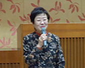
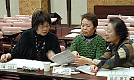
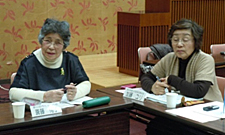
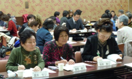

- 【日 時】
- 1月30日（水）13：30～16：00
- 【場 所】
- 春日部市民文化会館 大会議室
- 【参加団体】
- 県内消費者団体：12団体（47人）
春日部市くらしの会、加須市くらしの会、久喜市くらしの会、越谷市消費生活研究会、白岡市くらしの会、草加市くらしの会、吉川市くらしの会、生活協同組合さいたまコープ、NPO法人埼玉消費者被害をなくす会、新日本婦人の会埼玉県本部、埼玉母親大会連絡会、資料提供：28団体 - 【行 政】
- 埼玉県消費生活課、加須市市民相談室（2名）他、講師1名
- 【司 会】
- 宮前 やす 幹事（埼玉母親大会連絡会 代表幹事）
■市町村の行政との懇談について
提案 岩岡 宏保（消団連事務局長）
「今回の交流会では、今年施行が決まった「消費者教育推進法」について学び、各市町村との懇談を実現させてほしいこと、後半のグループ交流でも話題にし、これからのより良いくらしのために楽しく交流してください」と挨拶と提案がされました。
■学習会
「消費者教育推進法」と「消費者教育推進協議会」
弁護士 中村 弘毅さん
「推進法を受けて私たちが何をしなければならないか、各消費者団体との緊密な連携が大事です。「消費者教育推進協議会」を組織するという努力義務の中で、実態を知る様々な分野の方が参加するべき。弁護士会、司法書士会、消費者団体、それぞれが消費者教育を知る。事業者と消費者、お互いの説明を正しく理解する。その上で議論を計画する。学校関係の参加は保護者などに広がりが期待されます。防止が困難な大学生の被害では、大学側に消費者被害の認識が必要です。協議会が発足しても、さらに知識を新しくしていく組織としての努力が必要です。消費者行政活性化基金で作られた「消費生活アドバイザー弁護士」も活用することです。」と話されました。
■グループ交流
 学習テーマと各団体の創設をふりかえって
学習テーマと各団体の創設をふりかえって

草加市くらしの会は1967年創設。当時の草加市連合婦人会中心。久喜市くらしの会は創設当時共同販売がメインの活動・越谷市消費生活研究会は1979年消費者モニターが立ち上げました。加須市くらしの会の発足当時は廃油石鹸、廃品リサイクル等の活動から。白岡市くらしの会はくらしの「もったいない」から残り野菜の料理教室など生活見直しの活動をすすめてきました。
 平成24年度埼玉県市町村における消費生活関連事業調査から読み取る、わが町の様子について「消費者関連予算の増額」「専任職員の数を増やして欲しい」が共通事項でした。久喜市からは、消費者全体の安全・安心のために予算の増額が必要ということを強調されていました。
平成24年度埼玉県市町村における消費生活関連事業調査から読み取る、わが町の様子について「消費者関連予算の増額」「専任職員の数を増やして欲しい」が共通事項でした。久喜市からは、消費者全体の安全・安心のために予算の増額が必要ということを強調されていました。
|  |  |
■まとめ
加藤 ユリさん（新日本婦人の会埼玉県本部 会長）
各団体から多くのお話が聞けました。この学習と交流を、市町村との懇談につなげてください。